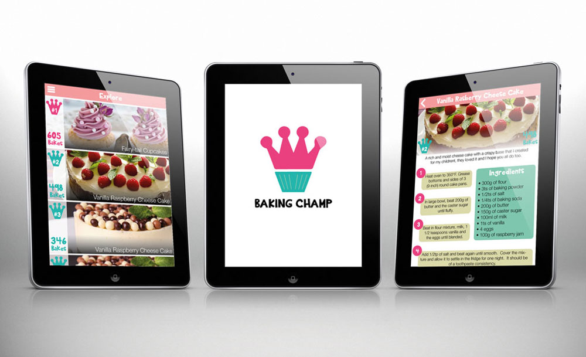
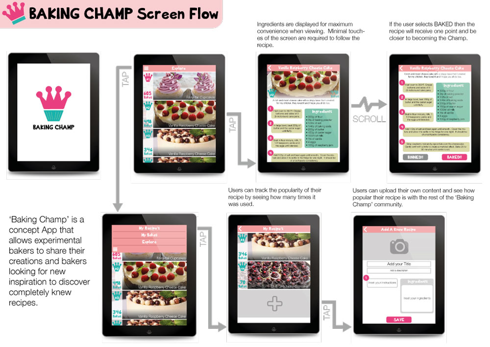
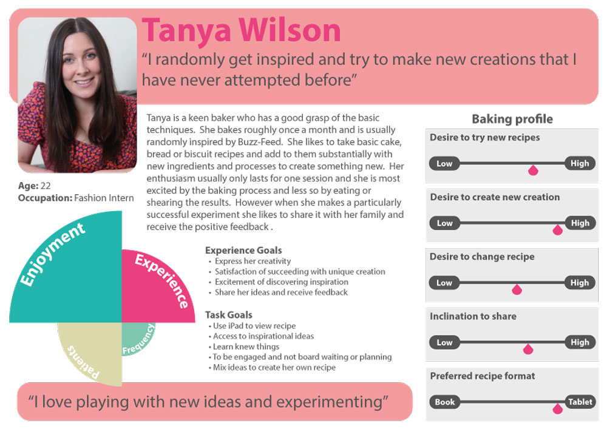
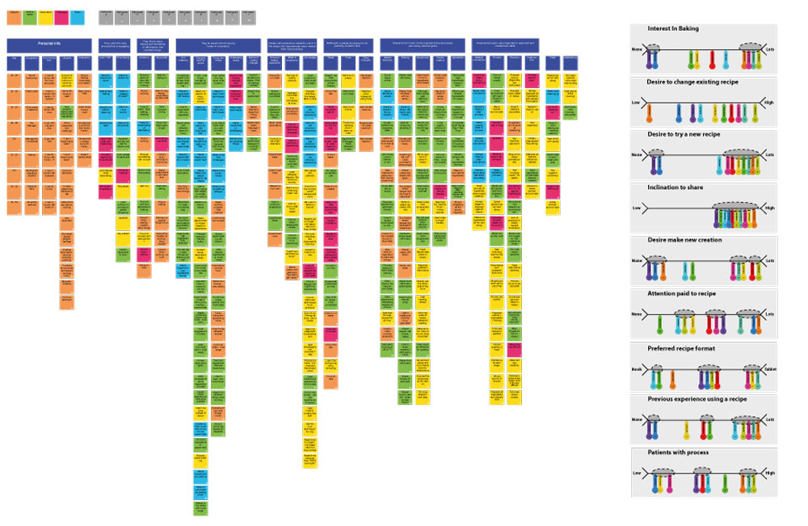

A Masters research project that challenged me to design innovative solutions to existing markets. Thematic analysis of in-depth contextual enquiries, Observations and Interviews uncovered the goals, needs and motivations of two Personas.
The final design stimulates crowd-sourced content by targeting the motivations of two different personas, Emily who follows recipes word for word but desires new exotic recipes to try and Tanya who completely experiments and desires positive feedback on her creations. The design allows these different personas to act on personal motivations to achieve their goals whilst indirectly producing content for each other, creating a sustainable ecosystem.




